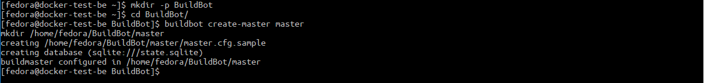
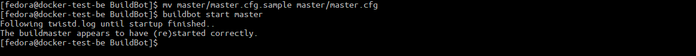
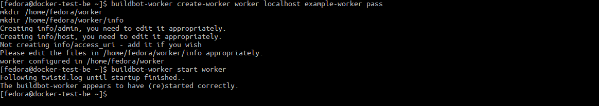
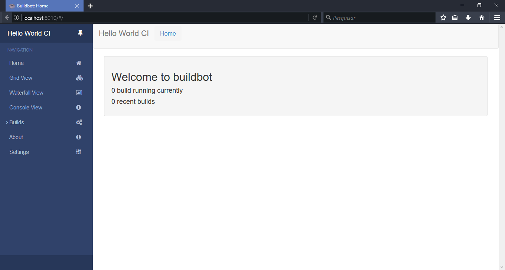

Buildbot its tool to automate compilation and tests. This tutorial we will install it on three important distro and run it.
1 - Installation dependencies:
- Installation of necessary packages to correct installation of Buildbot bundle.
Fedora 25:
sudo dnf install python-devel python-pip redhat-rpm-config make gcc
Fedora 26:
sudo dnf install python-pip redhat-rpm-config make gcc
Ubuntu and Debian:
sudo apt-get install Python-dev build-essential python-pip
2 - Installation without virtualenv:
sudo pip install --upgrade pip
sudo pip install 'buildbot[bundle]'
sudo pip install buildbot-grid-view
sudo pip install buildbot-worker
sudo pip install setuptools-trial
2.5 - Installation with virtualenv (optional):
- First we need install virtual environment.
Fedora:
sudo dnf install python-virtualenv
Ubuntu and Debian:
sudo apt install python-virtualenv
- Now we need activate the environment
virtualenv --no-site-packages YourSandbox
source YourSandbox/bin/activate
Instalation:
pip install --upgrade pip
pip install 'buildbot[bundle]'
pip install buildbot-grid-view
pip install buildbot-worker
pip install setuptools-trial
3- Initial Master setup:
- Creation of folder where Buildbot archives will stay:
mkdir -p BuildBot
cd BuildBot
- Creation of Master with name
[master]:
buildbot create-master master

- The configuration of all functions of Buildbot its done in configuration file inside Master folder, to simplify we will use the sample configuration file provided in default template of Master
[master.cfg.sample], but it’s needed be renamed to[master.cfg]to be recognized by Buildbot:
mv master/master.cfg.sample master/master.cfg
- Here we will start Master daemon:
buildbot start master

4- Initial Worker setup:
- Here we will create a worker (previously slave) with name
[worker]:
buildbot-worker create-worker worker localhost example-worker pass

The command syntax:
* buildbot-worker = Buildbot Worker program.
* create-worker = Command to creation of Worker
* worker = Name of worker folder
* localhost = Master location on the network (This example Master are in the same VM)
* example-worker = Name of worker
* pass = Authentication password
- Start of worker daemon:
buildbot-worker start worker
- Access address http://localhost:8010/ on your browser.
